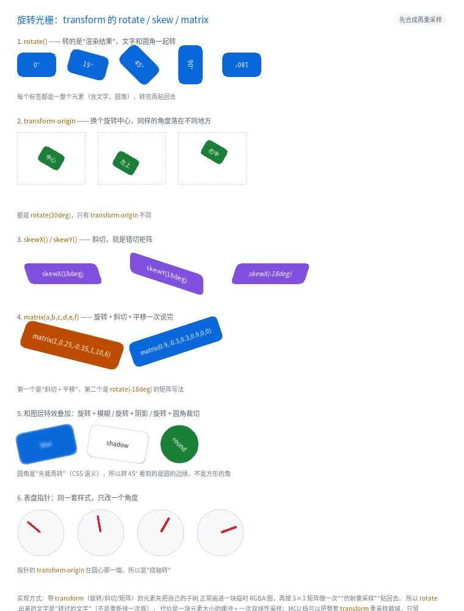

旋转光栅：transform: rotate() / skew() / matrix()

完整程序：example/32_transform/
到目前为止，transform 只做了两件事：translate()（加到绘制偏移上）和
scale()（绘制期绕中心缩放）。它们都是"画的时候顺手改一下坐标"，
一个图元画一次，零内存、零重采样。
rotate() / skew() / matrix() 不一样：它们转的是"已经画好的像素"。
.badge { transform: rotate(15deg); }
这行 CSS 在浏览器里意味着：先把 .badge 整个（背景、圆角、边框、文字、
子元素、滤镜结果）画成一张图，再把这张图转过去贴回来。所以
- 转过的文字是"转过的文字"，不是重新排版一次（字距、折行都不变）；
- 圆角转完还是圆的（不是转出一个方角）；
filter: blur()的结果跟着一起转（而不是转完再糊一次）。
1. 为什么必须"先合成再转"
另一条路是"把每个图元按矩阵画一遍"（矩形转成四边形、文字逐字转）。 听起来省一块缓冲，实际全是坑：
| 逐图元转 | 结果 |
|---|---|
| 文字 | 每个字形单独转，笔画的抗锯齿错位 → 看起来像马赛克；行距、字距也不再遵循排版 |
| 圆角 / 阴影 | 圆角矩形转成"旋转后的四边形 + 原来的圆角半径" → 形状明显变形 |
filter / mask / 组 opacity |
这些效果本身要求"先合成"，逐图元转会把它们拆散 |
所以实现直接复用上一章的离屏图层：style_needs_layer() 里加一条
"有 xform 就要图层"，剩下的重采样在合成阶段做一次。
也就是说：
transform的旋转能力挂在离屏图层包上。 把QL_FEAT_CSS_FILTER_LAYER裁掉之后，写rotate()会在构建期报错 （不是悄悄不转 —— 那是最难查的一类问题）。
2. 支持哪些写法
| 写法 | 说明 |
|---|---|
rotate(<角度>) |
顺时针为正；deg 单位 |
skew(<ax>[, <ay>]) / skewX() / skewY() |
错切（正方形变平行四边形） |
matrix(a,b,c,d,e,f) |
2×3 矩阵，一次说完"线性部分 + 平移" |
translate() / scale() 与上面混写 |
一整串乘成一个矩阵（CSS 语义） |
transform-origin |
px / 百分比 / left center right top bottom；默认元素中心 |
不支持的（会报错，不会静默忽略）：perspective()、rotate3d()、matrix3d() ——
它们要真 3D 管线（透视除法 + 深度排序），归"不排期"。
.a { transform: rotate(30deg); }
.b { transform: rotate(90deg); transform-origin: left top; } /* 绕左上角转 */
.c { transform: skewX(18deg); }
.d { transform: matrix(1, 0.25, -0.35, 1, 10, 6); } /* 斜切 + 平移 */
.e { transform: translate(10px, 4px) rotate(12deg) scale(1.1); } /* 乘成一个矩阵 */
3. transform-origin 决定"绕哪根轴转"
默认是元素中心（50% 50%）。换成 left top，同一个角度会落到完全不同的位置：
.needle { width: 40px; height: 28px; transform: rotate(30deg); }
.o-center { transform-origin: 50% 50%; }
.o-topleft { transform-origin: left top; }
.o-right { transform-origin: right center; }
百分比是相对元素自己的边框盒算的。例程第 6 节的表盘指针就是这么做的：
指针的 origin 放在"圆心那一端"，于是 rotate() 变成"绕轴转"。
4. 和图层特效叠加
因为旋转发生在合成阶段，顺序天然是 CSS 的语义：
子树（含 filter / opacity / mask）→ 合成 → 旋转重采样 → 贴回页面
于是下面三种写法都"看着对"：
.blur-rot { transform: rotate(-12deg); filter: blur(2px); } /* 先糊再转 */
.shadow-rot { transform: rotate(8deg); filter: drop-shadow(3px 4px 3px #0006); }
.round-rot { transform: rotate(45deg); border-radius: 32px; } /* 先裁再转 */
.round-rot 那个最容易验：64×64 的方块加 32px 圆角就是圆，
转 45° 之后看到的仍然是圆的边缘。如果实现是"先转再裁"，会立刻露出方角。
5. 命中测试也转了
旋转只影响绘制，不改变布局盒（getBoundingClientRect 在浏览器里也是原盒）。
所以点中测试要把屏幕点按矩阵逆变换回局部空间再判：
点 → M⁻¹ → 元素未旋转时的坐标 → 原来的盒判断
嵌套旋转也没问题：每个节点的逆变换都在它自己的局部空间里做， 逐层下降正好是仿射矩阵的连乘。
/* test_transform.c 里钉住这一条 */
ql_ui_hit_test(ui, 80, 45); /* 转了 90° 的竖条上 → 命中 */
ql_ui_hit_test(ui, 65, 60); /* 原来的横条位置 → 命中不到它 */
6. 代价
| 项 | 值 |
|---|---|
| 每样式的额外体积 | +8 B（矩阵下标 + 两个原点长度） |
| 矩阵存哪 | 文档里的矩阵池（26.6 定点，同值去重，上限 32） |
| 运行期内存 | 与离屏图层相同：元素盒大小的 RGBA 缓冲 |
| 编译期开关 | QL_FEAT_CSS_FILTER_LAYER（MCU 默认关） |
| MCU 实测 | 解析 + 矩阵运算只要 804 B；图层合成慢路 3,488 B |
别给滚动列表的每一行都加 rotate() —— 每行一个图层，等于每行多一次
"合成 + 重采样"。旋转适合做徽章、贴纸、表盘、卡片倾斜这类少量装饰。
7. 常见坑
- 元素转出父容器就被裁了。旋转不改变布局，父级的
overflow: hidden仍然按原盒裁。给旋转的元素留点内边距，或者让父级overflow: visible。 - 重采样会多出约 1 px 边缘。越界采样点走"边缘钳位"，所以旋转/平移后的 元素外沿会带一圈边缘色。CPU/GPU 一致，肉眼不可见 —— 但写像素断言时要算上。
scale()与rotate()一起写时整串进矩阵（不再走"绘制期缩放"那条快路）， 所以会开图层。只写scale()则仍然零重采样。@keyframes里不能写rotate()（关键帧只存translate/scale的整数值）。 需要转起来的动画请用 JS 改样式，或改用scale()做"假翻转"。transform-origin的百分比是相对边框盒的，不是相对内容盒 —— 带padding时两者不同。